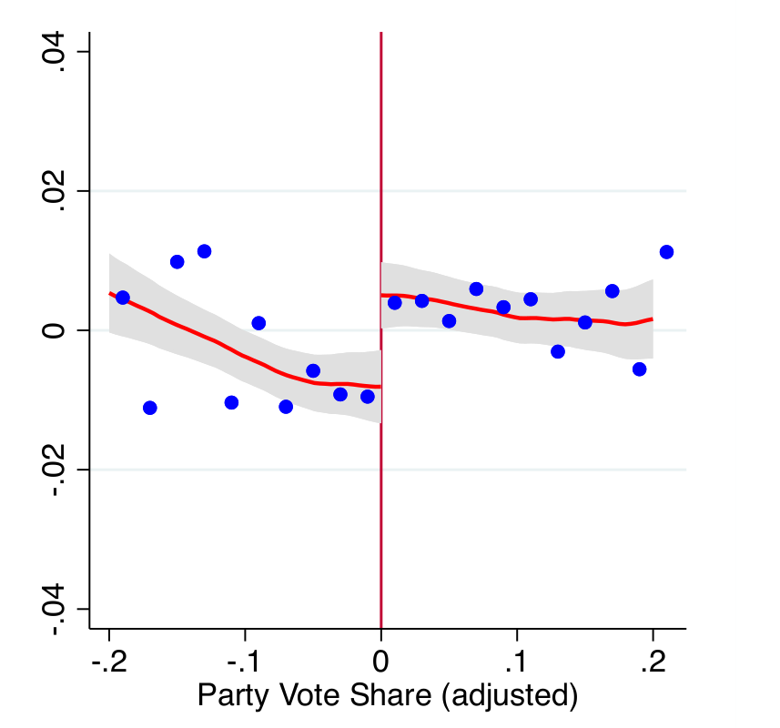
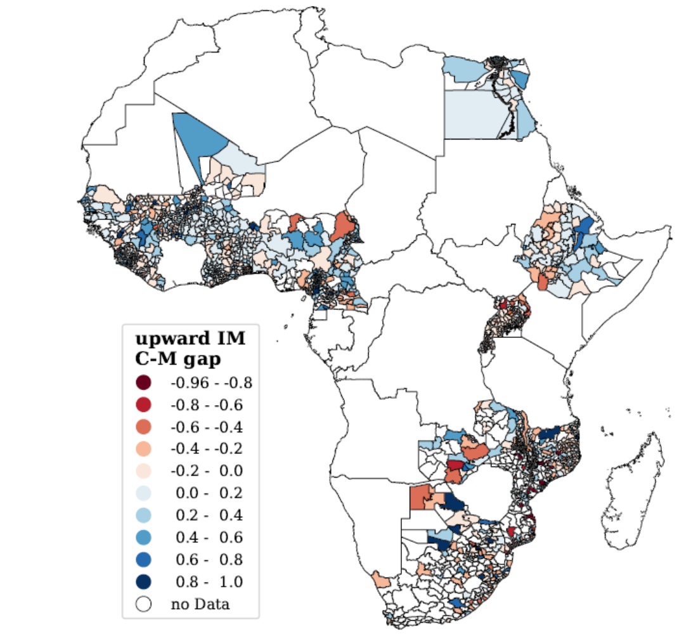
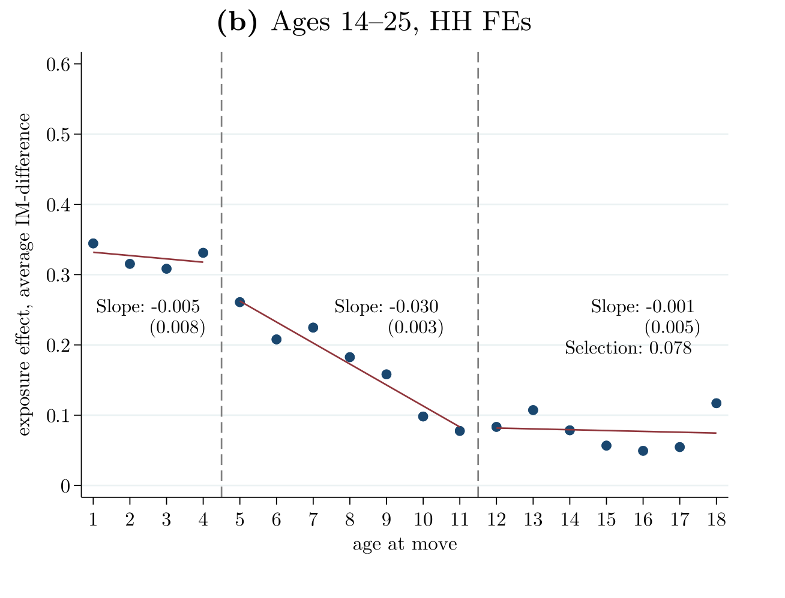
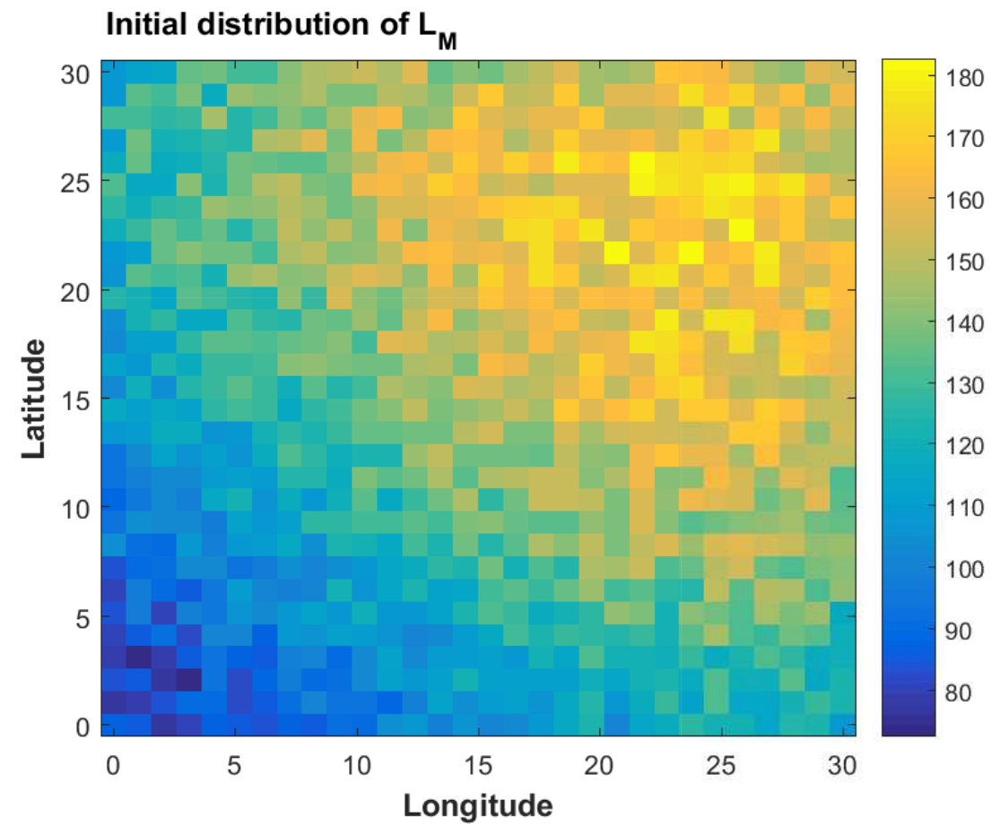

Publications

The
Employment Effects of Ethnic Politics.
American Economic Journal: Applied Economics, April 2024, 16(2): 456-491.
with Francesco Amodio and Giorgio Chiovelli
American Economic Journal: Applied Economics, April 2024, 16(2): 456-491.
with Francesco Amodio and Giorgio Chiovelli
We study the labor market consequences of ethnic politics in African democracies. Using subnational
georeferenced data from 15 countries from 1996 to 2017, we compare individuals from ethnicities linked to
parties at the margin of electing a representative in the national parliament. Having a local ethnic party
politician in parliament increases the likelihood of being employed by 2-3 percentage points. The effect
is concentrated in the agricultural sector and mostly driven by self-employment, suggesting increased
access to land as the main channel. We also show that religion and age are salient markers in African
politics that trigger similar employment effects.

Religion and Educational Mobility in
Africa.
Nature, May 2023, 618: 134-143.
with Alberto Alesina, Stelios Michalopoulos, and Elias Papaioannou
Media coverage: Nature Review (M. Platas)
Supplementary Online Appendix, Replication data and code
Nature, May 2023, 618: 134-143.
with Alberto Alesina, Stelios Michalopoulos, and Elias Papaioannou
Media coverage: Nature Review (M. Platas)
Supplementary Online Appendix, Replication data and code
The African people and leaders have long seen education as a driving force of development and liberation,
a view shared by international institutions, as schooling has significant economic and non-economic
returns, particularly in low-income settings.
In this study, we examine the educational progress across faiths throughout post-colonial Africa, home to
some of the world's largest Christian and Muslim communities. We construct novel religion-specific
measures of intergenerational mobility in education (IM) using census data from more than 2,000 districts
in 21 countries and document the following. First, Christians have better mobility outcomes than
Traditionalists and Muslims. Second, differences in IM between Christians and Muslims persist among those
residing in the same district, in households with comparable economic and family backgrounds. Third, while
Muslims benefit as much as Christians when they move early in life to high-mobility regions, they appear
less likely to do so. Their low internal mobility accentuates the educational deficit, as Muslims reside
in less urbanized, more remote with limited infrastructure areas. Fourth, the Christian-Muslim gap is most
prominent in areas with large Muslim communities, where the latter also register the lowest emigration
rates. As African governments and international organizations invest heavily in educational programs, our
findings highlight the need to understand better the private and social returns to schooling across faiths
in religiously segregated communities and carefully think about religious inequalities in the take-up of
educational policies.

Intergenerational
Mobility in
Africa
Econometrica, January 2021, 89(1): 1-35 (lead article).
with Alberto Alesina, Stelios Michalopoulos, and Elias Papaioannou
Media coverage: The Economist, VOXEU podcast
Supplementary Online Appendix, Replication data and code
Econometrica, January 2021, 89(1): 1-35 (lead article).
with Alberto Alesina, Stelios Michalopoulos, and Elias Papaioannou
Media coverage: The Economist, VOXEU podcast
Supplementary Online Appendix, Replication data and code
We examine intergenerational mobility (IM) in educational attainment in Africa since independence using
census data. First, we map IM across 27 countries and more than 2,800 regions, documenting wide
cross-country and especially within-country heterogeneity. Inertia looms large as differences in the
literacy of the old generation explain about half of the observed spatial disparities in IM. The
rural-urban divide is substantial. Though conspicuous in some countries, there is no evidence of
systematic gender gaps in IM. Second, we characterize the geography of IM, finding that colonial
investments in railroads and Christian missions, as well as proximity to capitals and the coastline are
the strongest correlates. Third, we ask whether the differences in mobility across regions reflect spatial
sorting or the independent role of the former. To isolate the two, we focus on children whose families
moved when they were young. Comparing siblings, looking at moves triggered by displacement shocks, and
using historical migrations to predict moving-families’ destinations, we establish that, while selection
is considerable, regional exposure effects are at play. An extra year spent in a high-mobility region
before the age of 12 (and after 5) significantly raises the likelihood for children of uneducated parents
to complete primary school. Overall, the evidence suggests that geographic and historical factors laid the
seeds for spatial disparities in IM that are cemented by sorting and the independent impact of regions.
Working papers

Natural
Resources,
Trade, and Structural Transformation in Africa
August 2018.
August 2018.
I combine georeferenced data on mining and oil endowments with satellite-images of land use and census
data on 112 million individuals from 2,700 regions in 23 countries to show that resource extraction and
international trade have fuelled Africa's recent structural transformation. In the first part of my
analysis, I document that both increases in the values of regional natural resource endowments, induced by
global price shocks, as well as a U.S. policy change, lowering tariffs on African imports, which affected
regions close to ports more strongly, lead to reallocations away from agriculture towards services. The
natural resource and trade shocks are re-enforcing in their effect on agriculture and services, but
neither crowds out manufacturing employment, which even expands in response to the trade shock. In the
second part of the analysis, I develop and then calibrate a quantitative multi-region multi-industry trade
model of structural transformation. There are two forces at play. Increases of local incomes in mining
regions increase the demand for non-tradables whereas reduced external trade costs, by lowering the prices
of tradable goods, favour locations better connected to international markets. I find the correlation
between model-predicted and observed labour share changes to be around 55 percent. Which of the two forces
dominate in explaining observed structural transformation depends on the spatial configuration of
location-specific access to international markets and natural resource advantages. The analysis concludes
with counterfactual simulations of the structural change implications of larger resource booms and
autarky.